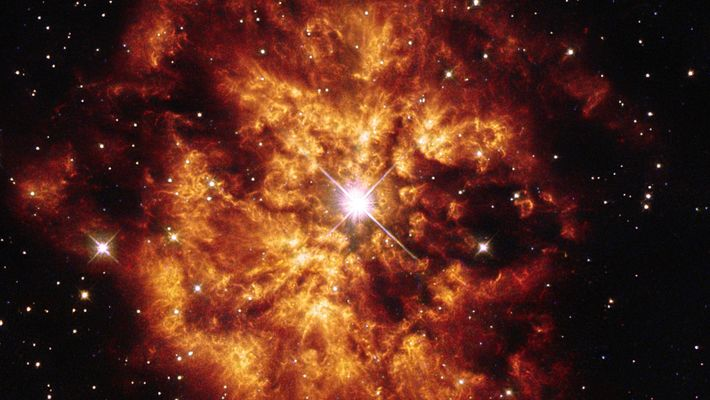

LAS ESTRELLAS

Las estrellas son cuerpos celestes gigantes, compuestos principalmente por hidrógeno y helio, que producen luz y calor desde sus arremolinadas fundiciones nucleares. Aparte del Sol, todos los puntos luminosos que vemos en el cielo se encuentran a años luz de la Tierra. Las estrellas son los bloques de construcción de las galaxias, y existen mil millones en el universo. Es imposible saber cuántas estrellas hay, pero los astrónomos calculan que solo en la galaxia de la Vía Láctea hay aproximadamente 300 mil millones.
Nace una estrella
El ciclo de vida de una estrella dura mil millones de años. En general, mientras más grande sea una estrella, más corto es su tiempo de vida. El nacimiento de una estrella ocurre dentro de las nebulosas, que son nubes de polvo constituidas por hidrógeno. A lo largo de miles de años, la gravedad provoca que las cavidades de materia densa dentro de la nebulosa colapsen bajo su propio peso. Una de estas masas de gas que se contrae, denominada protoestrella, representa la etapa naciente de la estrella. Debido a que el polvo de las nebulosas las oculta, las protoestrellas son difíciles de detectar.